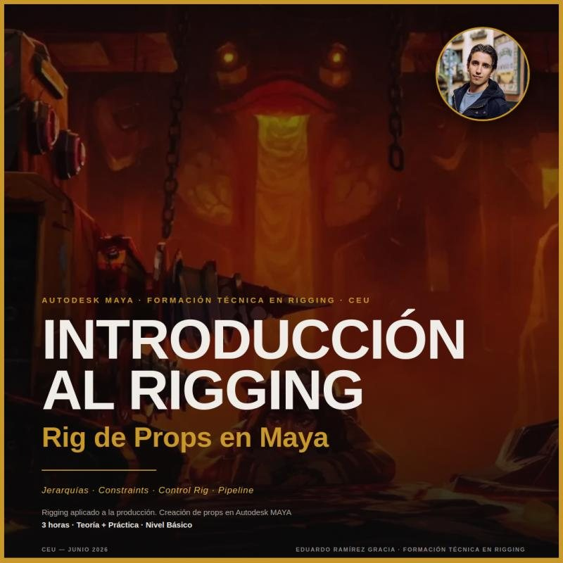

Fundamentos del Rigging en Producción
Rig de props en Maya: jerarquías, constraints, control rig y pipeline.
- Entiende la estructura jerárquica del rigging aplicado a producción
- Crea un rig funcional de prop con el flujo de trabajo de un estudio
- Aplica la nomenclatura y la organización de escena de un pipeline real
- Nivel
- Básico
- Software
- Autodesk Maya
- Impartido en
- CEU San Pablo